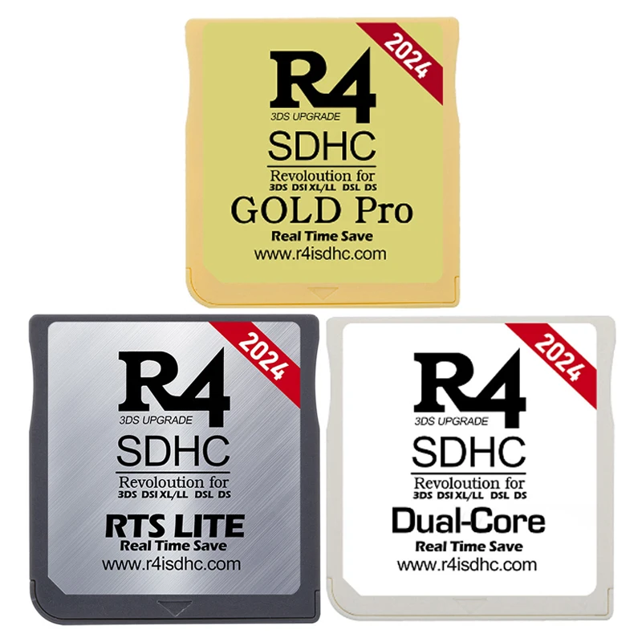

Si necesitas el sistema haz lo siguiente:
descarga los archivos > descomprime > coloca en la raiz de la memoria.
En caso de que no sepas si tu Cartucho R4 es orignal verifica lo siguiente:
- Que tu cartucho tenga pines color verde o amarillo.
- Verifica que tanto la parte delantera o la trasera tenga la pagina oficial r4isdhc.com 


Cuando compruebes que tu Cartucho es original descarga los archivos.
Descargar Archivos